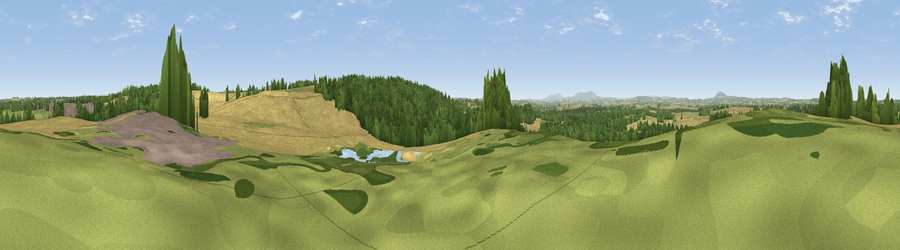

Viewpoint near Albrighton
#29639 in England · top 60% of its area beats it · near AlbrightonThe view, rendered

A 360° render of this exact spot computed from the terrain model, tree cover and land cover — summer colours, afternoon light, calibrated against photographs of famous viewpoints. Real trees, hedges and buildings will differ in detail.
The panorama
Grey silhouette: terrain skyline in each direction (720 bearings, Earth curvature and refraction included). Dashed green: skyline with trees (+15 m) and buildings (+8 m) as obstacles. Blue strip: how far the ground is visible on each bearing.
Where the view opens
Wedge length = distance to the farthest visible ground on that bearing (vegetation-aware). Rings at 10, 25 and 50 km.
What fills the view
72% cropland · 18% woodland · 9% grassland ·
Angular shares of the visible panorama (visual magnitude), not map area. Landscape diversity 0.36 (0–1 Shannon).
Key numbers
More beautiful places nearby
The staircase of upgrades: each row has a higher view potential than everything closer. Driving times are estimates from straight-line distance, calibrated against real road routing — check an actual route before setting out.
| Place | Direction | Drive | Score |
|---|---|---|---|
| Wrottesley Hill | SE · 1 km | ~4 min | 50.2 |
| Viewpoint near Claverley | S · 7 km | ~14 min | 52.0 |
| Viewpoint near Weston under Lizard | NNW · 8 km | ~16 min | 53.7 |
| Viewpoint near Lower Penn | SE · 8 km | ~16 min | 55.9 |
| Viewpoint near Lower Penn | SE · 9 km | ~17 min | 58.8 |
| Apley Terrace | WSW · 10 km | ~20 min | 65.1 |
| Viewpoint near Priorslee Village | NW · 14 km | ~25 min | 70.4 |
| Viewpoint near Enville | S · 17 km | ~29 min | 73.1 |
52.61435, -2.26469 · source: screening · position refined by local search. Computed location — check access rights before visiting.